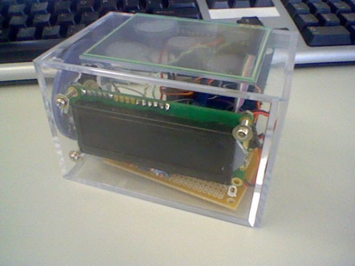
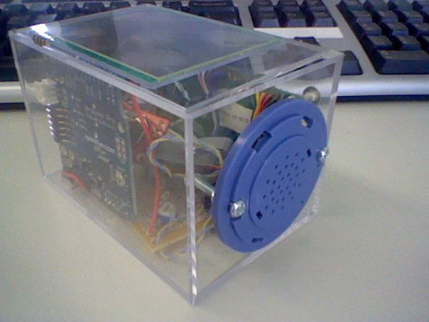
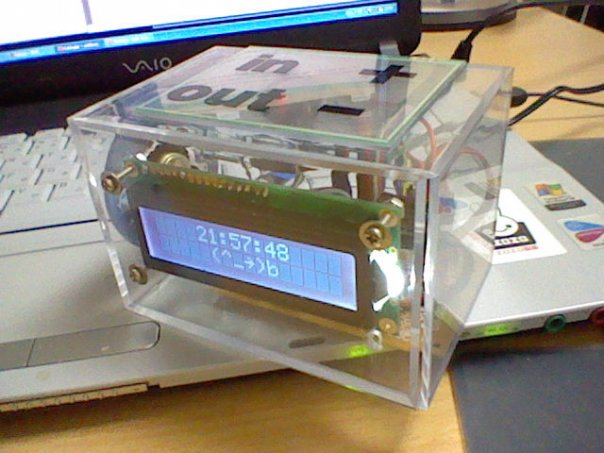
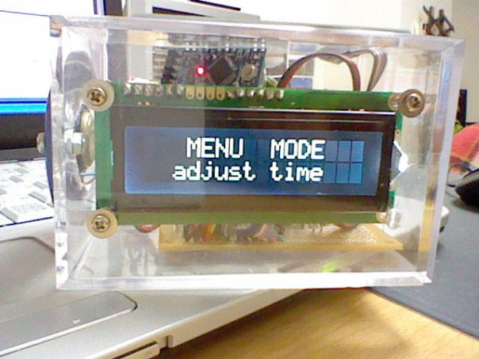
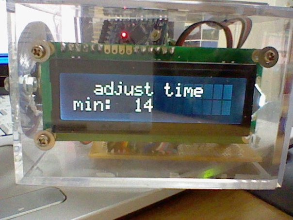
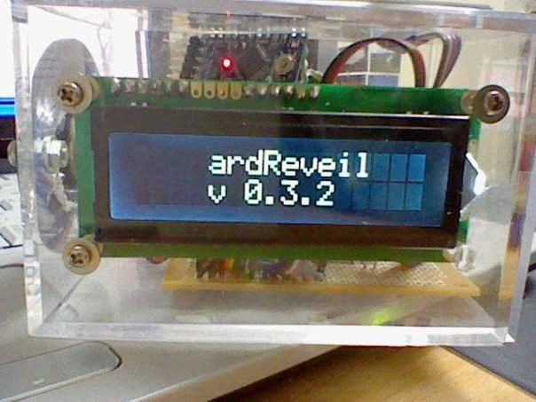

ardReveil vI, its incredible life
2009-08-14 : This project is a failure. Once everything assembled, it worked perfectly ... for 10 minutes. Then the Arduino just died. So I used another one (unsolder/resolder) everything. And it worked perfectly ... for a couple of days before the Arduino also died. I'll poste the schema here to see why it failed (if someone can help ... please).
This project is a failure. Once everything assembled, it worked perfectly ... for 10 minutes. Then the Arduino just died. So I used another one (unsolder/resolder) everything. And it worked perfectly ... for a couple of days before the Arduino also died. I'll poste the schema here to see why it failed (if someone can help ... please).(see above) for an unknown reason, it died after 2 days. Nothing works anymore, only power led turns on and ... that's all. Life sucks.
2009-12-20 : for an unknown reason the ardReveil decided to ... come back to life! Just plugged it to the usb for ... don't know, yet it's christmas so let's hope for miracle. And it worked all day ! Tonight plugged back on AC wallwart ... and works (for now). Shall I assume that there is a shortcircuit somewhere that I fixed by opening the box again ? Freaks me out ... (Oo;)
2010-01-01:
 it's working fine for days, except that programatically time can't be changed. So I implemented new functions such as menu (I use the touch screen divided in 4 zones as input), time offset (since you can't change time, you can still adjust it) and alarm setting on/off. Plus little label, this time it's finished \(^o^)/
it's working fine for days, except that programatically time can't be changed. So I implemented new functions such as menu (I use the touch screen divided in 4 zones as input), time offset (since you can't change time, you can still adjust it) and alarm setting on/off. Plus little label, this time it's finished \(^o^)/2010-03-02 :
2 months and a half working fine, waking me up everyday ... and then like last year : pffft, not working anymore. Tried to let it rest a day or two, no outcome. Nothing. Life sucks.2010-03-13 : Well ... it works back. Tired a few time the past days : nothing. And today, tadaaa, it works again. If someone has an idea, please tell me. Anyway, it came back to life, as did my will to make new electronic stuffs.
2010-03-13 :
Last post %20 30min : just died again. Condensator problem ? That would explain the time factor (the longer you way the more it works), won't it ? Life sucks.2010-07-12 : call me stuborn but I have not forgotten this little one. I plan to remove the arduino inside and put instead a home made arduino-like. It will be easier to update and change the code I think. Well and ... I'm short on idea, you noticed, didn't you? Hope this might help me understand that strange state of fact.
Purpose
Create a reveil ("alarm clock") powered by a Arduino, with some nice things inside:- Touch sensitive (use DS touch screen) : to light up, to stop ringing, to interact (no button save the on-off)
- Soft display : no agressive light, just show me the time when I touch you
- Nice colors (rgb ambient)
- Smart : I want a clock that ring MON-FRI at 8:00 and let me sleep on weekend!
- See Arduino and a Real Time Clock (RTC)
- Music : play some tunes for wake up
- Uses only a speaker and frequence generation. Result is simple but acceptable (not as good as the sound of the next version ardReveil v2
- Usual alarm clock functions :
- Snooze
- Wakeup time can be programmed via the touch pad
- Alarm can be turned off by menu via touch pad
Pictures
|  The ardReveil : top = touch screen, fromt = 2x16 char white on black parallel LCD, bottom = main board |
 The ardReveil : front = the speaker (from a headphone), left = Arduino Pro 5V ATmel 168 16 Mhz (but running 8 MHz), in the middle = RTC clock (small red breakboard) |
|  v0.3.2 with the labels on the touchscreen and menu |
 |
|  |
 |
Code
ardReveil.I.v0.3.2.zipAll the files, main .pde %20 satellite .h files for controlling subsystems.
Inside
- Arduino mini 8Mhz is sufficient but Japanese resseller is short, so I bought a Arduino pro 5V 16 MHz (no step up necessary for the RTC) but it is a ATmel 168! (half the space of a ATmel 328). And funny thing is that the core for the Arduino Pro is only for the 8Mhz. So your program run too fast and can't communicate properly. You have to turn down the speed of your ATmel, so use the CLKPR register (Clock Prescale Divider). ATmel doc explains the value to setup and you just have to do explained here http://www.arduino.cc/cgi-bin/yabb2/YaBB.pl?num=1163418637
- EDIT: however, since after 10 minutes plugged to the 9V DC wart the Arduino Pro just DIED, I had to un-solder and resolder everything to a small Arduino Mini 328, solving space and speed problem. Just in case, I pre-mounted a voltage regulator (LM317) to pre-clean the voltage before the card (don't want to kill another one)
// That arduino pro board is 16 mHz BUT the bootloader is made for 8MHz so force the // Arduino to run half speed (force 8MHz) CLKPR = (1<<CLKPCE); CLKPR = 1; // Divide by 2
- Other funny thing with the ATmel 168 is that we are missing space ! 16 ko for memory is short, very short for a program that pilot a touchscreen, generates sound, talks to a RTC via I2C and makes one or 2 useful things. No assembler required, but it requires being written consisely.
- DS Touch screen %20 connector break board
- Real time clock module http://www.sparkfun.com/commerce/product_info.php?products_id=99
- Nice white on black display (maybe turn rgb) http://www.sparkfun.com/commerce/product_info.php?products_id=709